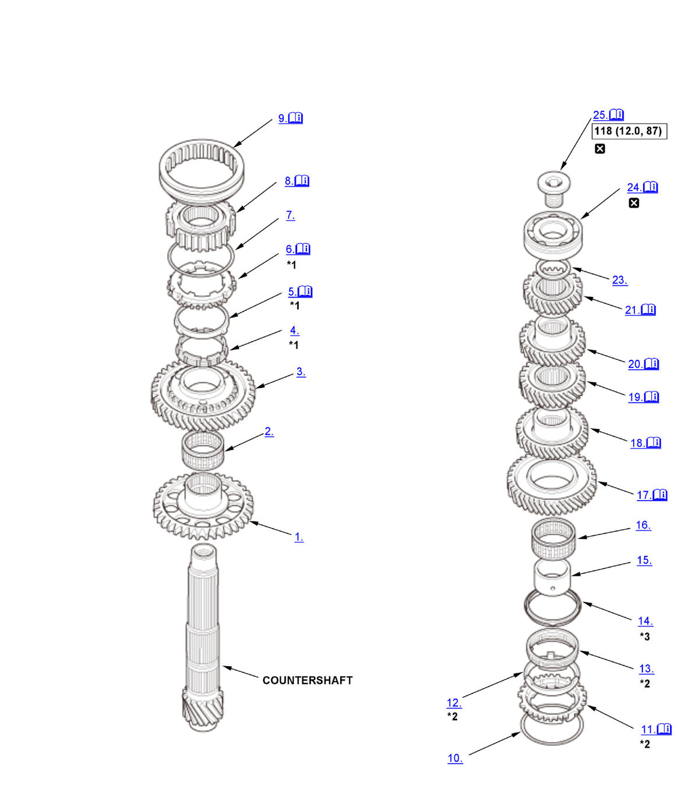

Countershaft Disassembly, Reassembly, and Inspection (Except K20C1 (M/T)): Reassembly: Procedure
WARNING: This page is about a different variant/trim than selected.
NOTE:
Numbered call-outs in figure pertain to list numbers in following procedure.
Fig 1: Exploded View Of Countershaft Components With Torque Specifications For Reassembly (Except K20C1 - M/T)

Courtesy of HONDA, U.S.A., INC. |
Detailed information, notes, and precautions |
 |
Torque: N.m (kgf.m, lbf.ft) |
 |
Replace |
| *1 | Double cone synchro assembly |
| *2 | Triple cone synchro assembly |
| *3 | 2.0L Engine |
- Counter Shaft Reverse Gear - Install
- Needle Bearing - Install
- 1st Gear - Install
- Inner Ring - Install
- Synchro Cone - Install
1. Install the synchro cone (A) by aligning the synchro cone fingers (B) with the holes (C) in 1st gear. - Synchro Ring - Install
1. Install the synchro ring (A) by aligning the synchro ring fingers (B) with the grooves (C) in the inner ring (D). - Synchro Spring - Install
- 1st/2nd Synchro Hub - Install
1. Install the 1st/2nd synchro hub (A) by aligning the synchro ring fingers (B) with the grooves (C) in the 1st/2nd synchro hub. - 1st/2nd Synchro Sleeve - Install
1. Install the 1st/2nd synchro sleeve (A) by aligning the slots of the 1st/2nd synchro sleeve and the 1st/2nd synchro hub (B). NOTE: Make sure to align the slots in the 1st/2nd synchro hub as shown.
- Synchro Spring - Install
- Synchro Ring - Install
1. Install the synchro ring (A) by aligning the synchro ring fingers (B) with the grooves (C) in the 1st/2nd synchro hub. - Synchro Cone - Install
- Inner Ring - Install
- Friction Damper - Install (2.0L Engine)
- 2nd Gear Distance Collar - Install
- Needle Bearing - Install
- 2nd Gear - Install
1. Install 2nd gear (A) by aligning the synchro cone fingers (B) with the holes in 2nd gear (C). - 3rd Gear - Install
1. Support the countershaft (A) on steel blocks, then press on 3rd gear (B) using the 58 x 62 mm driver and a press (C).
NOTE: Do not exceed the maximum pressure. - 4th Gear - Install
1. Press on 4th gear (A) using the 58 x 62 mm driver and a press (B).
NOTE: Do not exceed the maximum pressure. - 5th Gear - Install
1. Press on 5th gear (A) using the 40 mm I.D. driver handle and a press (B).
NOTE: Do not exceed the maximum pressure. - 6th Gear - Install
1. Press on 6th gear (A) using the 40 mm I.D. driver handle and a press (B).
NOTE: Do not exceed the maximum pressure. - 35 mm Shim - Clearance Check
1. Install the 35 mm shim (A), and temporarily press on the used ball bearing (B) using the 40 mm I.D. driver handle, the 30 mm I.D. bearing driver attachment, and a press (C).
NOTE:- Use any size of 35 mm shim, and note size you used. Measurements taken in the following steps will determine the correct shim to use for final assembly.
- Make sure the ball bearing is installed in the correct direction.
2. Measure the clearance between the ball bearing (A) and the 35 mm shim (B) with a feeler gauge (C). Standard: 0.04-0.10 mm (0.002-0.003 in) 3. If the measured clearance is not within the standard, select another suitable 35 mm shim from the table, then go to next step to replace the 35 mm shim and the ball bearing with new ones. If the measured clearance is within the standard, go to the next step to replace only the ball bearing with a new one.
35 mm Shim
Type Thickness A 0.86 mm (0.0339 in) B 0.88 mm (0.0346 in) C 0.90 mm (0.0354 in) D 0.92 mm (0.0362 in) E 0.94 mm (0.0370 in) F 0.96 mm (0.0378 in) G 0.98 mm (0.0386 in) H 1.00 mm (0.0394 in) J 1.02 mm (0.0402 in) K 1.04 mm (0.0409 in) L 1.06 mm (0.0417 in) M 1.08 mm (0.0425 in) N 1.10 mm (0.0433 in) P 1.12 mm (0.0441 in) Q 1.14 mm (0.0449 in) R 1.16 mm (0.0457 in) S 1.18 mm (0.0465 in) T 1.20 mm (0.0472 in) U 1.22 mm (0.0480 in) V 1.24 mm (0.0488 in) Type Thickness W 1.26 mm (0.0496 in) X 1.28 mm (0.0504 in) Y 1.30 mm (0.0512 in) Z 1.32 mm (0.0520 in) AA 1.34 mm (0.0528 in) AB 1.36 mm (0.0535 in) AC 1.38 mm (0.0543 in) AD 1.40 mm (0.0551 in) AE 1.42 mm (0.0559 in) AF 1.44 mm (0.0567 in) AG 1.46 mm (0.0575 in) AH 1.48 mm (0.0583 in) AJ 1.50 mm (0.0591 in) AK 1.52 mm (0.0598 in) AL 1.54 mm (0.0606 in) AM 1.56 mm (0.0614 in) AN 1.58 mm (0.0622 in) AP 1.60 mm (0.0630 in) AQ 1.62 mm (0.0638 in) AR 1.64 mm (0.0646 in) AS 1.66 mm (0.0654 in) AT 1.68 mm (0.0661 in) AU 1.70 mm (0.0669 in) AV 1.72 mm (0.0677 in) AW 1.74 mm (0.0685 in) AX 1.76 mm (0.0693 in) AY 1.78 mm (0.0701 in) AZ 1.80 mm (0.0709 in) AAA 1.82 mm (0.0717 in) AAB 1.84 mm (0.0724 in) AAC 1.86 mm (0.0732 in) AAD 1.88 mm (0.0740 in) AAE 1.90 mm (0.0748 in) AAF 1.92 mm (0.0756 in) AAG 1.94 mm (0.0764 in) AAH 1.96 mm (0.0772 in) AAJ 1.98 mm (0.0780 in) AAK 2.00 mm (0.0787 in) 4. Remove 6th gear with the ball bearing and the 35 mm shim using a press.
5. Repeat step 21 (6th Gear - Install).
- 35 mm Shim - Install
- Ball Bearing - Install
1. Install the ball bearing (A) using the 40 mm I.D. driver handle, the 30 mm I.D. bearing driver attachment, and a press (B).
NOTE:- If necessary, replace the 35 mm shim with the correct one selected in step 22-2 (35 mm Shim - Clearance Check).
- Make sure the ball bearing is installed in the correct direction.
2. Recheck the clearance between the ball bearing and the 35 mm shim with a feeler gauge.
- Special Bolt - Install
1. Securely clamp the countershaft assembly in a bench vise with wood blocks (A). 2. Tighten a special bolt (B) (left-hand threads).